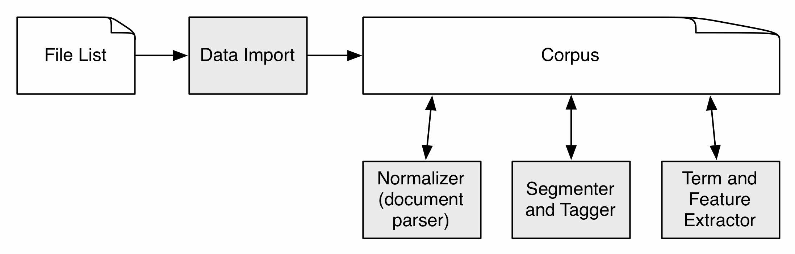

The feature extractor collects documents into a corpus and then processes these documents, where processing includes document structure parsing (which creates a normalized representation for the document), sentence splitting, tokenization, part-of-speech tagging, term extraction and feature extraction. This phase is a prerequisite for subsequent processing by other Techknowledgist modules. The documents processed can be US or Chinese patents from LexisNexis or Web of Science abstracts.
Requirements for running the code:
The code has been tested on Linux RHEL 6 and recent Mac OS 10 systems. The code has not been tested on Windows, but there are no major reasons that would prevent this code from running on it.
Installation is a matter of getting the code, installing the Stanford tools, and setting up your configuration.
If you downloaded the code as an archive then all you need to do is unpack it somewhere in a directory without spaces in its path. If you do not have the full archive, you obtain the code by cloning the git repository:
$ git clone https://github.com/techknowledgist/tgist-features
After getting the clone, you need to initialize and update the submodule used by the repository:
$ cd tgist-features $ git submodule init $ git submodule update
The current code uses version 3.1.3 of the tagger (the full version, not just the English version) and version 1.6.6 of the segmenter. These versions can be downloaded from
http://nlp.stanford.edu/software/tagger.shtml
http://nlp.stanford.edu/software/segmenter.shtml
More recent versions probably work, but have not been tested. Download the
tools, unpack them and put them somewhere, making sure the path name does not
include spaces. If you want to make the configuration step below trivial you
could create a tools subdirectory and add the unpacked tools
there.
This distribution comes with a sample configuration file
named config-sample.py, which you need to copy
to config.py. To change the default settings edit this configuration
file, typically all you need to do is to change the values of the following two
variables:
STANFORD_TAGGER_DIR STANFORD_SEGMENTER_DIR
For example, if you had downloaded the Stanford Tagger version 3.1.3 you
would have an archive
named stanford-postagger-full-2012-07-09.tgz. And if you had
unpacked this in a top-level directory named tools then you would
have to edit the line in configuration file with
the STANFORD_TAGGER_DIR setting as follows:
STANFORD_TAGGER_DIR = "/tools/stanford-postagger-full-2012-07-09"
At this point you should be able to run the code and you can test it by doing
$ python main.py -f ../data/lists/sample-us.txt -c sample-us
This should produce something very similar to the following output on your screen
[--init] initializing sample-us timestamp = 01/09/18 17:31:59 language = en datasource = ln source_file = ../data/lists/sample-us.txt source_path = None target_path = sample-us shuffle = None git_commit = 782749d [--init] creating directory structure in sample-us [--init] creating sample-us/config/general.txt [--init] creating sample-us/config/pipeline-default.txt [--init] creating sample-us/config/files.txt [--populate] adding 4 files to <DataSet d0_xml version_id=01 files=0> [--xml2txt] created <DataSet d1_txt version_id=01 files=0> [--xml2txt] input <DataSet d0_xml version_id=01 files=4> [--xml2txt] output <DataSet d1_txt version_id=01 files=0> [--txt2tag] created <DataSet d2_tag version_id=01 files=0> [--txt2tag] input <DataSet d1_txt version_id=01 files=4> [--txt2tag] output <DataSet d2_tag version_id=01 files=0> [--tag2chk] created <DataSet d3_fea version_id=01 files=0> [--tag2chk] input <DataSet d2_tag version_id=01 files=4> [--tag2chk] output <DataSet d3_fea version_id=01 files=0> [--tag2chk] using 'en' chunker rules
In addition, you should now have a directory
named sample-us with about 272K of
content. See below for more details on how to run the
code.
In some cases, you may have to set some environment variables to avoid encoding issues. In particular, the tagger may report errors on certain input lines and hang after some number of errors. If you use Linux with a bash shell, add the following to .bash_profile if you have problems:
export LC_ALL=en_US.UTF-8 export LANG=en_US.UTF-8
The equivalent for a Linux csh is to add the following to .cshrc:
setenv LC_ALL en_US.UTF-8 setenv LANG en_US.UTF-8
The problem has not been observed for Mac OSX and, oddly, problematic Linux servers have no problem when you log in from a Mac.
The input is a list with file path specifications where each line contains two or three tab-separated fields: a year, a file path and an optional shortened path. An example is printed below.
1980 ../data/patents/xml/us/1980/12.xml 1980/12.xml 1980 ../data/patents/xml/us/1980/13.xml 1980/13.xml 1980 ../data/patents/xml/us/1980/14.xml 0000 ../data/patents/xml/us/1980/15.xml
The file path points to the actual location of the file to be processed for this corpus. In this case the paths are relative to the location of the script that is executed. The shortened path can be used to specify a local path in the corpus, if it is not given, the local path will be the entire file path. For example, if the input file contains the four lines above, we will have a short local path for two of the files. The year can be given the dummy value 0000 if it is not known or if it does not matter for current processing. Included in the distribution are two example file lists in sample-us.txt and sample-cn.txt.
There are two ways to create and process a corpus: one more suited for smaller corpora (up to a few hundred files) and one suited for larger corpora. They are equivalent in the sense that the results are identical when the two approaches are applied to the same list of files.
The simplest way is to use the main.py script which requires as
input a file list and an output directory (using the -f and -c options
respectively, or --filelist and --corpus when using their long forms):
$ python main.py -f ../data/lists/sample-us.txt -c sample-us
There are two more options. The language defaults to English, but to specify
that the language is Chines use "-l cn". To use verbose messages (basically
printing filenames when they are processed), use -v
or --verbose. See the documentation string
in main.py for more information.
The invocation above will look for the Stanford tools at the locations
specified in config.py. You can overrule those settings by
specifying the location of the Stanford tagger and segmenter on the command
line:
--stanford-tagger-dir PATH --stanford-segmenter-dir PATH
The paths point to the root of the installation of these tools, that is, the
directory that includes the bin directory. The path may not contain
spaces. Also, the code checks whether PATH is an existing directory, but it does
not check whether the directory includes the needed binaries. If PATH does not
point at the correct location then the code will enter a loop and hang.
The main limitation with the main.py script is that processing
time can get rather high for large corpora, for example, processing 40,000 US
patents takes 1-2 days on a high-end desktop. The process can easily be
parallelized by splitting the corpus in smaller chunks, but in that case some
extra bookkeeping is needed, especially to prepare for subsequent processing. In
addition, the main.py script has been proven to a bit brittle at
times. There is error trapping at the document processing level, but there are
some ill-understood errors that are known to cause the tagger to hang at
times.
As an alternative way to create and process a corpus, there is a slightly
more complicated series of batch processing steps that can be taken. To achieve
the same results as with the main.py script we would do the
following:
$ python step1_init.py -f ../data/lists/sample-us.txt -c sample-us $ python step2_process.py -c ../data/sample-us -n 4 --populate $ python step2_process.py -c ../data/sample-us -n 4 --xml2txt $ python step2_process.py -c ../data/sample-us -n 4 --txt2tag $ python step2_process.py -c ../data/sample-us -n 4 --tag2chk
This particular invocation may exit with a warning if you ran the
example above with the main.py script because then the
corpus sample-us would already exists, so then another
directory should be used. The main difference here, apart from using five
commands instead of one, is that main.py processes all documents in
the list but for these batch scripts the number of files to be processed has to
be given (it defaults to processing one document). This allows for some more
flexibility in how you want to process a corpus. See the documentation string of
the two batch scripts for more information.
The resulting corpus is almost identical to the one created
with main.py, barring some configuration settings like timestamp
and the initialization command used. Also, in case you feel compelled to do a
diff on both results, it will claim that all files generated are different but
this is because all files are compressed.
$ python main.py -f ../data/lists/sample-us.txt -c sample-us
This creates a directory sample-us, in which the corpus is
initialized and populated with the files listed
in ../data/lists/sample-us.txt. The directory structure is as
follows:
|-- config
| |-- files.txt
| |-- general.txt
| `-- pipeline-default.txt
`-- data
|-- d0_xml 'import of XML data'
|-- d1_txt 'results of document structure parser'
|-- d2_seg 'segmenter results'
|-- d2_tag 'tagger results '
|-- d3_feats 'results from candidate selection and feature extraction'
`-- workspace 'work space area'
The script copied the file list to config/files.txt so there is
a local copy of the list with all input files.
This script only performs document-level processing and fills in d0_xml, d1_txt, d2_seg (Chinese only), d2_tag and d3_feats. The structure of those directories mirror each other and looks as follows:
`-- 01
|-- state
| |-- processed.txt
| `-- processing-history.txt
|-- config
| |-- pipeline-head.txt
| `-- pipeline-trace.txt
`-- files
|-- 1980
| | US4192770A.xml.gz
| ` US4236596A.xml.gz
`-- 1981
| US4246708A.xml.gz
` US4254395A.xml.gz
All files are compressed. The first part of the directory tree is a run
identifier, usually always '01' unless the corpus was processed in different
ways (using different chunker rules for example). As mentioned above, the
structure under the files directory is determined by the third column in the
file list.
The four basic components of the feature extractor are shown below in the grey boxes.
The Data Import step takes a list with file paths and initializes a corpus by copying all files from the file list to it. Recall that lines in the file list look as follows:
1980 ../data/patents/xml/us/1980/12.xml 1980/12.xml 1980 ../data/patents/xml/us/1980/13.xml 1980/13.xml
The second column contains the path external to the corpus and the third the location of the file in the corpus (if there is no third column than the location inside the corpus will be the same path as the external path).
Once a corpus is created layers of anaylsis are added by several other components:
last_word and prev_V.